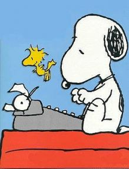

Why Every Entrepreneur Should Self-Publish a Book
|
James Altucher |
posted yesterday | 99 comments |

I’ve published eight books in the past seven years, five with traditional publishers (Wiley, Penguin, HarperCollins), one comic book, and the last two I’ve self-published. In this post I give the specific details of all of my sales numbers and advances with the traditional publishers. Although the jury is still out on my self-published books, “How to be the Luckiest Man Alive” and ”I Was Blind But Now I See” I can tell you these two have already sold more than my five books with traditional publishers, combined.
Over the next year I have five different books planned. All on different topics. I’m super-excited about them because I’m allowed to push the barrier in every area I’m interested in and there’s nobody to stop me. There’s nobody I need validation from. I get to pick myself.
You can do this also. And now, you should do it. There’s no more excuses in this environment. Good luck and feel free to write me with any questions.
Over the next year I have five different books planned. All on different topics. I’m super-excited about them because I’m allowed to push the barrier in every area I’m interested in and there’s nobody to stop me. There’s nobody I need validation from. I get to pick myself.
You can do this also. And now, you should do it. There’s no more excuses in this environment. Good luck and feel free to write me with any questions.